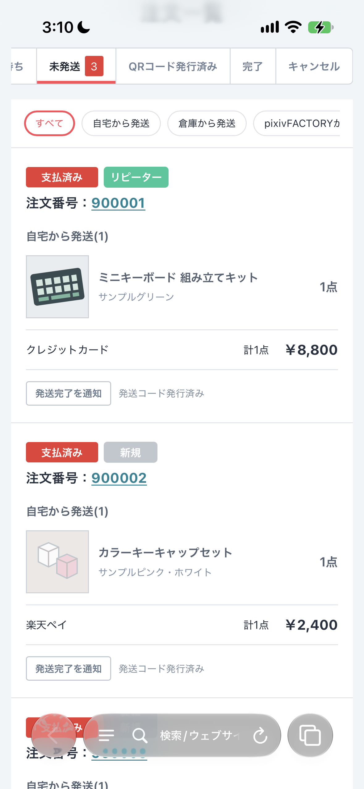
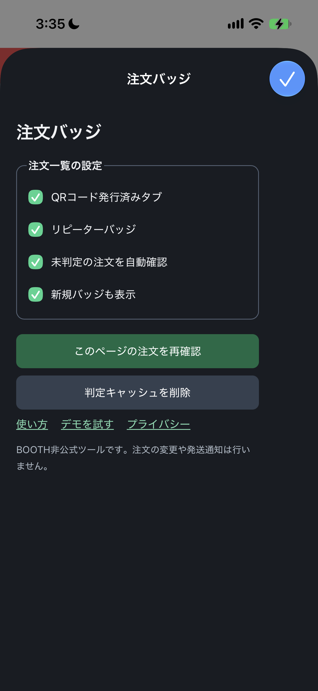

注文バッジ
複数回購入してくれている人の注文にバッジを表示します。
未発送の注文のうち、QRコードを発行済みのものだけ表示する機能もあります。




Mac・iPhone・iPadのSafari向けに開発中の、無料の非公式の注文管理支援ツールです。App Storeではまだ公開していません。
各機能のオン・オフ、自動確認、新規バッジ、再確認、キャッシュ削除に対応します。注文の変更、QR発行、発送通知は行いません。
使い方
- インストール後、Safariの設定で機能拡張を有効にします。
- Safariでショップ管理画面にログインし、機能拡張のサイトアクセスを許可します。
- 注文一覧を開きます。Safariの機能拡張メニューから設定やローカルデモを開けます。
判定について
QRの判定は注文画面の表示文言に基づく推定です。フィルタは現在のページ内が対象です。「リピーター」は取得できた購入者一覧に別注文がある状態で、キャンセル等や当該注文より後の注文を含む場合があります。発送前にはショップ管理画面の情報を確認してください。
「新規」は最終確認時点で別注文が見つからなかった状態です。結果の有効期間は新規24時間、リピーター7日、失敗15分です。キャッシュ削除時は自動確認もオフになります。
お問い合わせ
注文バッジのGitHub Issuesで、不具合やご質問を受け付けます。GitHubアカウントが必要です。
OS・Safariのバージョンと症状をお知らせください。注文番号、購入者情報、ログイン情報を公開投稿に含めないでください。